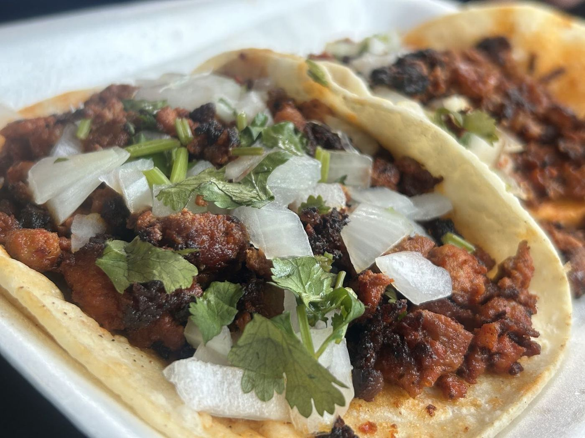

4.8★ from
39 reviews
Word of mouth
Great tacos 🌮 massive portion. Flavor on point. Highly recommend. I got 4 fajita tacos with cheese, drink and a bean soup for $11.50. Sweet old lady running the taco truck solo.
Delicious food! Fresh quality! Great service! Best place for Mexican food and pupusas in Pasadena. Recommend for everyone to go!!!
We just made it into town (visiting family) and decided to give this place a shot. Absolutely amazing the food was so good! My daughter got the beef fajita quesadilla we got beef fajita tacos and pupusas revueltas. I would recommend it all. The lady was so wonderful and kind. It is cash only fyi. Go try it out! You will not be disappointed!!
Amazing pupusas! Very fast service. Miss Ana is a very sweet lady and has the best dishes. Tastes likes Moms cooking. The tacos are delicious and also the gorditas.
Saw this food truck on my way home, all the plants they have caught my attention, so I decided to stop and give it a try, I bought a torta, because I was really hungry. There is no regret. The torta came with charro beans, a salsa on the side. It was delicious 😋 I really do recommend this place. Forgot to mention, they have fair prices.
This is a fairly new Taqueria- so I can understand if you're hesitant to try this place out. Don't let the small stand give off the wrong impression! The food is extremely delicious. My favorite item to order is a chicken torta! But if you're not into that, get your favorite tacos! What's extra nice about this place, is you get a free side of charro beans if you ask for them!
Was skeptical to check out this place at first, but now I'm hooked. I go here at least once a week now lol. Not only that the food is great, the owner is extremely nice and pleasant. Make sure to order charro beans with your orders. They're really good.